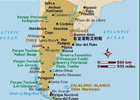

- 阿根廷国旗
- 阿根廷国徽
- 阿根廷标志性建筑
- 阿根廷地理位置
阿根廷概况
阿根廷属于南美洲
人口概况
阿根廷人口增长迅速, 1850年人口只有110万, 1900年467.3万, 1930年1493.6万, 2000年3780多万, 2010年4000万。主要民族是欧洲人和印第安人, 其中白种人占97%, 多属意大利和西班牙后裔。是南美洲各国白种人比率最高的国家。城市人口占五分之四。混血种人, 印第安人及其他人种占3%。官方语言为西班牙语。居民87%信奉天主教, 其余的信奉新教及其他宗教。
阿根廷经济
阿根廷物产富饶, 气候适宜, 土地肥沃, 是综合国力较强的拉美国家。2009年的人均GDP达到7726美元。工业门类较齐全, 主要有钢铁、电力、汽车、石油、化工、纺织、机械、食品等。工业产值占国内生产总值的1/3。核工业发展水平居拉美前列, 现拥有3座核电站。钢产量居拉美前列。机器制造业具有相当水平, 其生产的飞机已打入国际市场。食品加工业较先进, 主要有肉类加工、乳制品、粮食加工、水果加工和酿酒等行业。阿是世界葡萄酒主要生产国之一, 年产量30亿公升。矿产资源有石油、天然气、煤炭、铁、银、铀、铅、锡、石膏、硫磺等。现已探明蕴藏量:石油28．8亿桶, 天然气7635亿立方米, 煤炭6亿吨, 铁3亿吨, 铀2．94万吨。水力资源丰富。森林面积占全国总面积的1/3左右。沿海渔业资源丰富。国土面积的55%是牧场, 农牧业发达, 畜牧业占农牧业总产值的40%。全国牲畜的80%集中在潘帕斯大草原。阿是世界粮食和肉类重要生产国和出口国, 素有“粮仓肉库”之称。主要种植小麦、玉米、大豆、高粱和葵花籽等。近年来, 阿根廷已成为南美最大的旅游国家, 主要旅游点有巴里洛切风景区、伊瓜苏大瀑布、莫雷诺冰川等。
农牧业发达, 为世界主要的农牧产品生产国和出口国之一。牧场和草原占全国土地面积的55%, 耕地占12.7%。畜牧业有牛、羊、猪、马；农产品有小麦、玉米、大豆、高粱、大麦、棉花、亚麻籽等。羊、牛的头数和小麦、玉米、大豆的产量都居世界前列。工业产值超过农业, 占国民生产总值的40%左右, 工业部门齐全。有食品、纺织、皮革等农牧产品加工工业, 近年来钢铁、汽车、化工、石油开采和提炼、电子、电力等部门发展甚速。交通发达, 铁路全长约4.4万公里, 公路105万公里。出口以农牧产品为主, 其中肉类、小麦、玉米、大豆、亚麻籽、羊毛等占出口总值的75-80%, 近年来工业品出口亦有大幅度增长。进口多为机器设备、工业原料、化学品等。
外交关系
中华人民共和国的成立, 在阿根廷和其他拉美国家中引起较大反响。中国也很重视开展与拉美国家的关系。20 世纪五六十年代, 中阿民间往来较多, 促进了两国关系的发展。1972 年2 月19 日, 中国与阿根廷正式建立外交关系。阿根廷成为拉美地区与中国较早建交的国家之一。
20 世纪80 年代, 中阿在各领域友好合作关系进一步发展。90 年代以来, 两国关系的发展又上了一个新的台阶。高层互访不断, 加深了相互了解和友谊。两国政府间建立了政治磋商机制, 在许多重大国际问题上有着一致或相似的观点和立场, 在国际机构中有着良好的合作关系。两国已就建立中阿21 世纪全面合作伙伴关系达成共识。
经贸往来
早在20世纪50 年代, 中国、阿根廷之间就有经贸往来, 1954 年10 月阿根廷工商界代表团访华, 1957 年6 月中国人民银行代表团访阿, 1958年10 月中阿代表在北京签署两国银行间支付合约。60年代, 中国大量进口阿根廷栲胶和小麦。1972 年两国建交后, 双方经贸合作关系有较大的发展。1977 年2 月双方签署中阿政府间贸易合作协定, 1978 年5月签署海运协定, 1980 年6 月签署经济合作协定等, 对两国经贸关系的发展起了较大的推动作用。2003 年中阿贸易总额达30 亿美元左右。阿根廷已成为中国在拉美地区主要贸易伙伴之一。
中阿在科学技术方面也有着良好的合作关系。1980 年6 月, 双方签署了中阿政府间科技合作协定。合作领域包括和平利用原子能、南极考察、农牧业研究和航天科学研究及应用等。为了协调和推动合作项目的落实, 还成立了科技合作混委会。
中国和阿根廷在经贸和科技合作方面有着很强的互补性, 发展前景广阔。